FlyUX App
The goal of this case study was to create an online experience that is fast, easy, and intuitive: one that’s based on a deep understanding of their target users.
ROLE
UX Research
Analysis
Design
Prototyping
Wireframing
TEAM
Self-Directed
CLIENTS
FlyUX Airlines
(Startup, Potential)
YEAR
Winter 2020
Design Challenge (Task):
As the industry is full of unmotivating and complicated In-app flight booking process, the primary task was to analyze what other airlines are doing, learn from their mistakes and take inspiration from the things they do right in order to design a usable fight booking process for a new mobile app for Fly UX.
 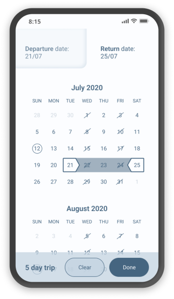
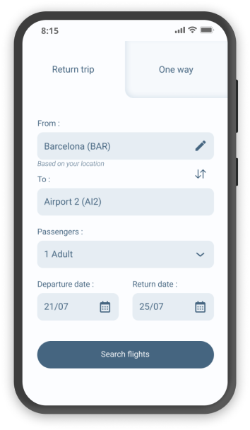
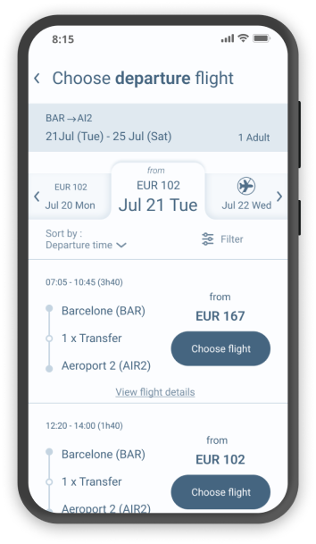
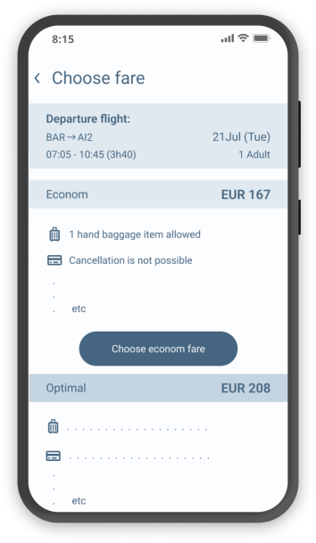
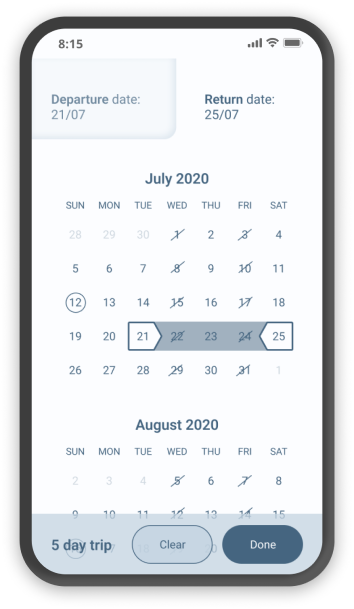
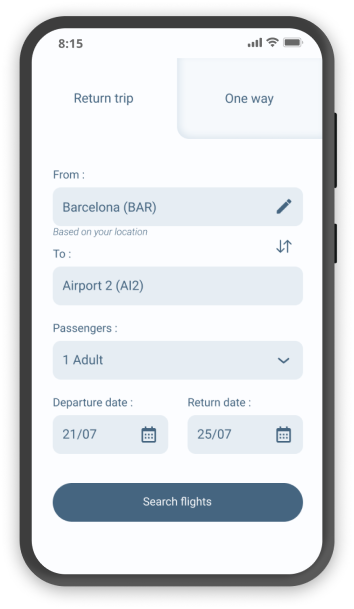
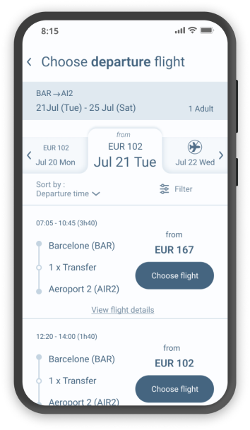
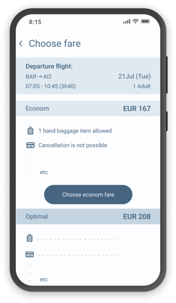
UX Research
First, in order to identify what the competitors and apps in the similar industry are doing right, and learn from what they are doing wrong the competitive benchmarking was done.
Four mobile apps were reviewed to gain the insights on how best to design airline app.
Objectives :
- Learn how best-in-class apps solve the problems FlyUX is trying to solve
- Understand the conventions that should be followed
- Highlight best practice that should be emulated
To learn more about the goals of people that use airline apps: what they are trying to do, whether anything is preventing them from doing it, and what other features they would like to see an online survey was conducted.
For the richer insights directly from the user depth interview and a comparative usability test were conducted to learn more about his goals, behaviours, context, positive interactions, and pain points.
Objectives :
- Learn about the context of use of people that use airline apps: what are they trying to do, who are they with, where are they, what devices are they using
- Learn about the goals and behaviours of airline customers when booking flights
Analysis
All the gathered research results needed to be analysed to be able to make the right decisions and create a usable product. To sort through large volumes of data and get to the root of all the findings, an affinity diagram session was run.
Objectives :
- Review the research
- Put structure on qualitative research data through the collaborative analysis
Process (remote, during lockdown) :
1. Research data was shared with the participants.
2. During the review of the research data notes were made by each participant about anything relevant to describing the current user experience: goals, behaviours, pain points, mental models, and contextual information.
3. At the end all the notes were gathered on a remote board Post-it by Post-it and organized by clear groups that correspond to experiences that need to be addressed during a design of the website.
 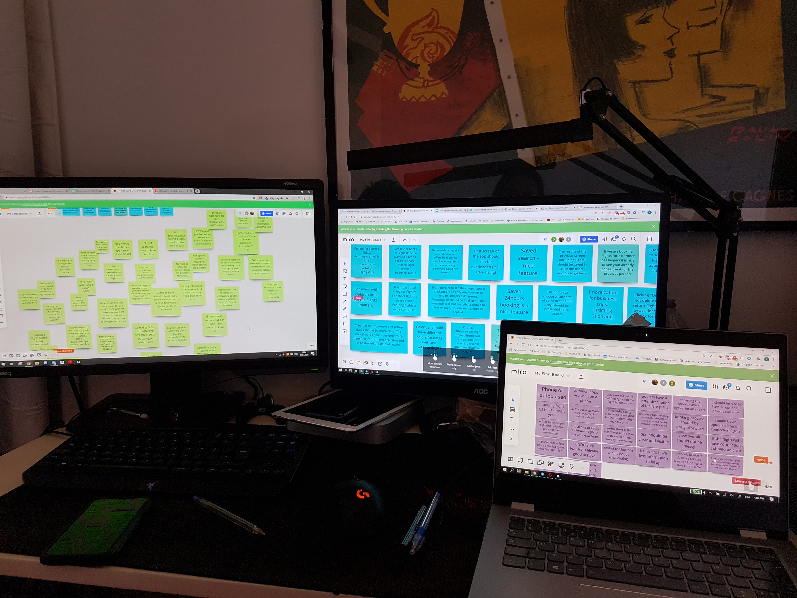
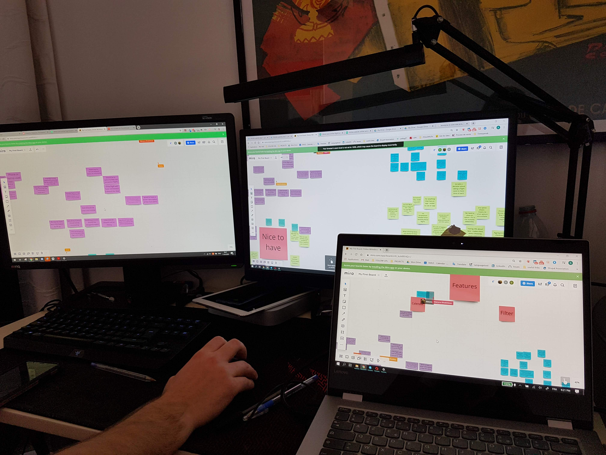
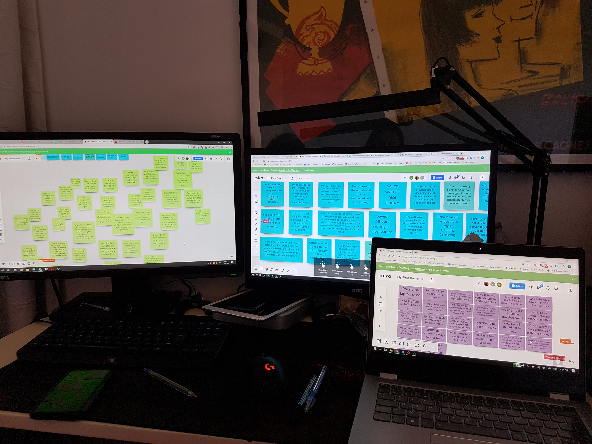
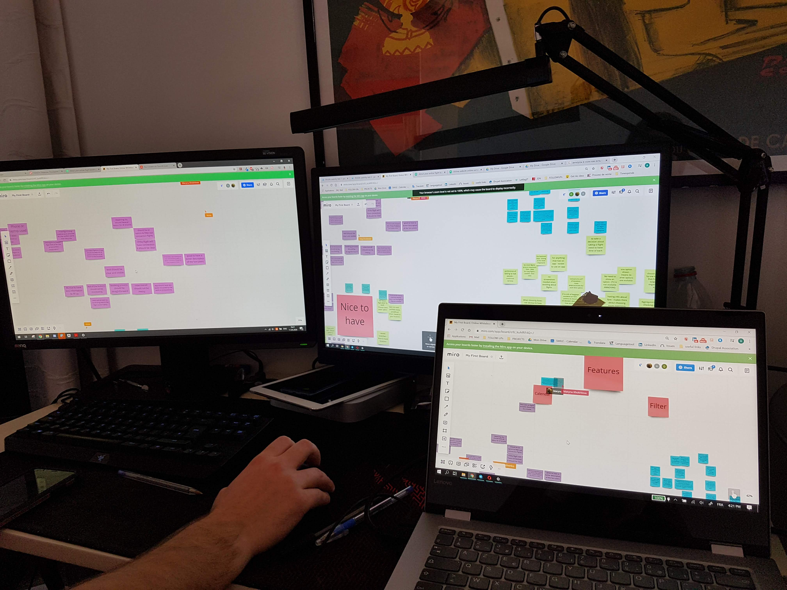
For putting even more structure on the analysis of the research data and having a review of a step-by-step booking process customer journey map technique was used.
Objectives :
- Translate research data into a structured document
- Define and examinate the high-level steps in the journey
- Understand the goals of the user, whether there were any pain points, and if there were any behaviours that the website was not facilitating.
Design
To fix the issues uncovered during research, and highlighted during the analysis a high-level flow for the mobile app was defined focusing on one flow, that is, one primary use case.
Objectives :
- Define the high-level flow for booking flights on the new airline mobile app
- Address all the issues highlighted in the customer journey map
- Lay the groundwork on which the designs will be built
Next step - design the sketches of the screens for the mobile app flight booking process.
Objectives :
- Design the clear screens and screen states for users flowing through the Fly UX mobile app
- Address all the issues and user goals identified in the research and analysis
 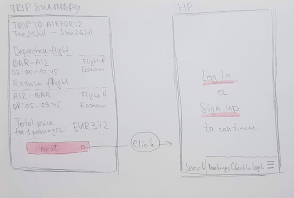
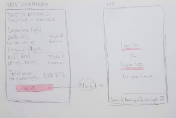
A low fidelity screens was then created in order to digitalize the sketches.


Prototyping

After testing the first iteration medium fidelity prototype for the Fly UX mobile application was created to add more detail in the form of interactivity, containing high-level flow, screen layouts, text, and basic interactions.
Wireframing
Wireframes were created to define the extra details that developers need to build the product accurately.


Do I have your attention?
Hit me up